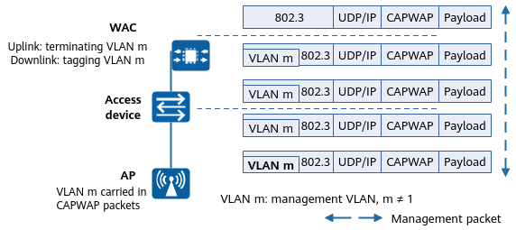

Configuring the Management VLAN Tagging Function on an AP's Wired Interface
Context
In practice, the PVID of an AP's wired interface is typically set to the management VLAN ID. For details, see "VLAN Deployment" in CLI Configuration Guide > WLAN Configuration > WLAN STA Management Configuration. When management packets from the AP reach the access device through a CAPWAP tunnel, the access device tags the packets with the PVID.
If the PVID of the access device has been used for other purposes (for example, as the default VLAN ID of wired users), the PVID cannot be configured as the management VLAN ID on the access device interface. In this case, configure CAPWAP packets sent from an AP's wired interface to carry the management VLAN tag. The AP then adds the management VLAN tag to the CAPWAP packets sent to the WAC. You only need to configure the access device directly connected to the AP to allow the packets carrying the management VLAN tag to pass.

After configuring the management VLAN tagging function on an AP's wired interface, restart the AP to make the configuration take effect.

Access Device Capability and PVID Configuration |
AP Configuration Requirements |
|---|---|
The access device does not support the VLAN function. |
CAPWAP packets are enabled to carry the management VLAN tag. Additionally, ensure that the AP's uplink wired interface is added to the management VLAN in tagged mode. By default, an AP's uplink wired interface joins all VLANs except VLAN 1 in tagged mode. Therefore, no additional configuration is required. To modify the configuration, run the vlan tagged vlan-id command in the AP wired port profile view and bind the profile to an AP or AP group. |
The access device supports the VLAN function, and the PVID of the interface directly connected to the AP is different from the management VLAN ID. |
|
The access device supports the VLAN function, and the PVID of the interface directly connected to the AP is the same as the management VLAN ID. |
CAPWAP packets sent by an AP do not carry the management VLAN tag. The access device adds the management VLAN tag to CAPWAP packets. NOTE:
In this case, to enable CAPWAP packets to carry the management VLAN tag, run the vlan pvid vlan-id command to configure the PVID of the AP's uplink wired interface to be the same as the management VLAN ID. Otherwise, the AP cannot receive management packets, causing repeated disconnection and restart. |
Procedure
- Enter the system view.
system-view - Enter the WLAN view.
wlan - Create an AP system profile, and enter its view.
ap-system-profile name profile-name
By default, the AP system profile default exists on the device.
- Configure CAPWAP packets sent from the AP's wired interface to carry the management VLAN tag.
management-vlan vlan-id
By default, CAPWAP packets sent from an AP's wired interface do not carry a management VLAN tag.
The configuration takes effect only after the AP is restarted.
- Return to the WLAN view.
quit - Enter the AP view or AP group view.
- Enter the AP group view.
ap-group name group-name
- Enter the AP view.
ap-id ap-id
- Enter the AP group view.
- Bind the AP system profile to an AP group or a single AP.
ap-system-profile profile-name
By default, the AP system profile default is bound to an AP group, but no AP system profile is bound to an AP.